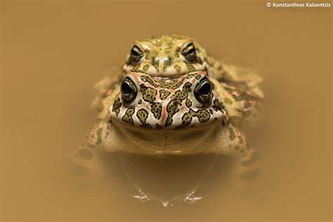

EUROPEAN GREEN TOAD
(This guy is a lot bigger than me. Better not get in his way when he is hungry.) Millie
This is Sherman named for a certain general and known for his tanks. Sherman looks like he's wearing fatigues so he just had to have a distinguished military name. Pictured here its obvious Sherman has gotten the best of his opponent. This is our first toad so we're getting to know each other. We can say we like him very much. Hope he feels the same. Not a lot of differences in care. He loves to eat, crickets, worms, flies and especially wax worms although too many are fattening and not a lot of "good" nutrition but are great for a treat. He hides in his toad house most of the day but comes out now and then to check things out. He soaks in his "pond" at least once a day.
Sherman taking a bath. This shot shows off his off his pretty green spots.
What? You don't like being picked up?
Wartzee, an "orange" European green toad. What's that all about?
 Now this is team work.